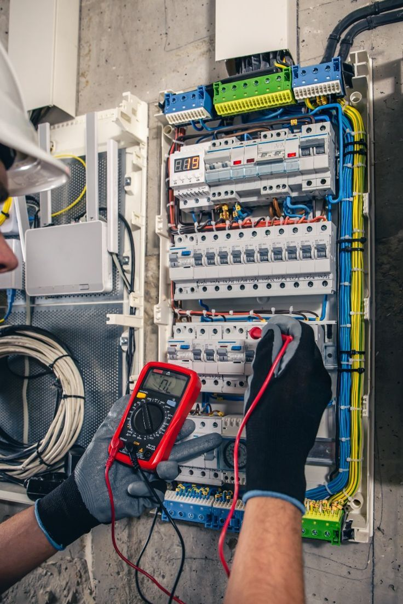
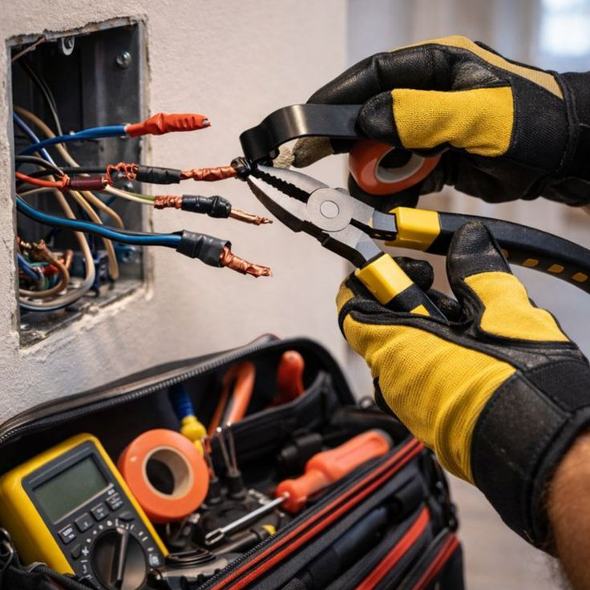

Instaliacija
naujos linijos, papildomi taškai ir atnaujinimai
Šiame puslapyje pateikiama platesnė informacija apie elektros darbus Kaune: nuo instaliacijos ir gedimų šalinimo iki skydelių, rozečių, jungiklių ir apšvietimo sprendimų įvairiuose objektuose.

Instaliacija
naujos linijos, papildomi taškai ir atnaujinimai
Gedimai
diagnozė, priežasties paieška ir saugus sprendimas
Skydeliai
apsaugos, grandinių logika ir pertvarkymas
Kauno rajonas
darbai atliekami ir už miesto pagal susitarimą
Poreikiai skirtinguose objektuose nevienodi, todėl svarbu suprasti, kokie darbai dažniausiai atliekami ir kuo jie skiriasi.
Elektros darbai Kaune apima kur kas daugiau nei vieną skubų iškvietimą. Vienuose objektuose reikia naujos instaliacijos po remonto, kituose prireikia papildomų taškų virtuvei, kondicionieriui, šilumos siurbliui ar darbo vietai. Taip pat dažnai tenka sutvarkyti elektros skydelį, pakeisti nusidėvėjusias rozetes, prijungti apšvietimą arba surasti, kodėl nuolat išmuša automatus. Praktikoje svarbiausia ne tik atlikti darbą, bet ir parinkti sprendimą, kuris tiktų konkrečiam naudojimui.
Darbo apimtis priklauso nuo objekto būklės ir nuo to, ar kalbame apie butą, individualų namą, ar komercines patalpas. Dėl to prieš pradedant verta aiškiai įsivardyti, ar reikalingas smulkus pataisymas, ar nuoseklus elektros ūkio atnaujinimas. Toks pradinis aptarimas padeda išvengti situacijos, kai po kelių savaičių tenka grįžti prie tų pačių vietų ir iš naujo ardyti apdailą dėl per mažai suplanuotų taškų ar nepakankamai įvertintų apkrovų.
Naujos linijos, taškų planavimas ir senesnių sprendimų atnaujinimas, kai objektas keičiasi kartu su naudojimo įpročiais.
Gedimų paieška, automatų išmušinėjimo priežasčių nustatymas ir nestabilios elektros sprendimai.
Grandinių suskirstymas, apsaugų atnaujinimas ir vietos naujoms linijoms paruošimas.
Šviestuvų, jungiklių ir papildomų rozečių sprendimai pagal realų patalpos išdėstymą.
Elektros instaliacijos darbai dažniausiai reikalingi tada, kai keičiasi patalpų planas arba senesnė sistema nebeatitinka dabartinio naudojimo. Virtuvėje atsiranda daugiau galingos technikos, miegamajame reikia papildomų taškų prie lovos, o darbo zonoje svarbus stabilus maitinimas kompiuteriams ir kitai įrangai. Tokiose situacijose vien tik pratęsti esamą liniją dažnai nepakanka, todėl verta iš anksto įvertinti grandinių apkrovas, taškų vietas ir būsimą naudojimą.
Remontuojamuose butuose ar namuose dažnai išryškėja ir senesnės instaliacijos ribotumai. Jei paliekamos nusidėvėjusios linijos, vėliau gali trūkti galios, o ateityje vis tiek tenka grįžti prie papildomų darbų. Dėl to elektros instaliacijos įrengimas ar remontas planuojamas ne tik pagal šiandieninį poreikį, bet ir pagal tai, kaip objektas bus naudojamas artimiausiais metais. Taip galima išvengti bereikalingo ardymo ir patogiau paskirstyti būsimus įrenginius bei apšvietimo grupes.

Elektros gedimų šalinimas dažniausiai prasideda nuo simptomų, kurie iš pirmo žvilgsnio atrodo atsitiktiniai: kartais dingsta elektra vienoje zonoje, ima kaisti rozetė, mirksi apšvietimas arba be aiškios priežasties išmuša automatai. Tokiose situacijose svarbu ne tik atkurti veikimą, bet ir suprasti, kodėl problema kartojasi. Vienur priežastis slypi perkrautoje grandinėje, kitur netvarkingame pajungime, susidėvėjusiame mechanizme ar senesnės instaliacijos vietoje.
Greitas ir saugus sprendimas atsiranda tada, kai pirmiausia nustatoma tikroji gedimo priežastis. Todėl gedimų paieška Kaune neturėtų apsiriboti vien laikinu „sutvarkymu“, jei problema po kelių dienų gali sugrįžti. Jei jaučiamas svilėsių kvapas, kibirkščiuoja jungikliai, nuolat krenta įtampa ar neveikia atskiros grandinės, elektriką verta kviesti nedelsiant. Kuo anksčiau įvertinama situacija, tuo mažesnė tikimybė, kad nedidelis gedimas taps didesniu remontu.
Elektros skydelis yra vieta, nuo kurios priklauso visos sistemos logika, todėl jo montavimas ar pertvarkymas turi būti apgalvotas. Kai objekte atsiranda naujų grandinių, galingesnių įrenginių arba keičiasi patalpų paskirtis, sena skydelio schema ne visada išlieka patogi ir aiški. Dėl to gali būti sunkiau suprasti, kuri apsauga valdo konkrečią zoną, o gedimų atveju ilgiau užtrunka rasti problemos šaltinį.
Tvarkingai sumontuotas skydelis palengvina kasdienį naudojimą ir būsimus priežiūros darbus. Svarbu, kad grandinės būtų logiškai suskirstytos, apsaugos parinktos pagal naudojimą, o nauji pajungimai nepalikti atsitiktiniai. Toks sprendimas ypač naudingas renovuojamuose namuose ir butuose, kai po truputį pridedama naujų taškų, įrangos ar apšvietimo grupių. Jei skydelyje jau trūksta vietos arba dabartinė schema nebeaiški, verta jį įvertinti anksčiau, o ne laukti pirmo rimtesnio gedimo.
Rozečių, jungiklių ir apšvietimo montavimas dažnai atrodo kaip smulkesnis darbas, tačiau nuo jo labai priklauso kasdienis patogumas. Net ir gerai įrengtoje instaliacijoje nepatogiai parinktos vietos gali lemti prailgintuvų naudojimą, neaiškią jungimo logiką ar prastai apšviestas darbo zonas. Dėl to verta iš anksto apgalvoti, kaip judama patalpoje, kur stovi baldai, technika ir kokio pobūdžio apšvietimas bus reikalingas skirtingu paros metu.
Šie darbai aktualūs tiek naujai įrengiamuose, tiek renovuojamuose objektuose. Virtuvėje dažniau reikia papildomų rozečių technikai, koridoriuje svarbu patogiai valdomas apšvietimas, o miegamuosiuose ar darbo kambariuose naudinga turėti aiškiai suplanuotas vietas prie lovos ar stalo. Gerai apgalvoti taškai padeda išlaikyti tvarkingą vaizdą ir sumažina poreikį vėliau perdarinėti jau užbaigtą apdailą.
Skirtingi objektai kelia skirtingus reikalavimus. Butuose dažniausiai sprendžiami papildomų taškų, senesnės instaliacijos ar skydelio atnaujinimo klausimai, individualiuose namuose daugiau dėmesio reikia didesnėms zonoms, lauko apšvietimui ir rezervui būsimai įrangai, o komercinėse patalpose svarbiausia aiškus grandinių paskirstymas ir patikimas darbo vietų maitinimas. Kiekvienu atveju tikslas tas pats: kad sistema būtų patogi naudoti šiandien ir nereikalautų bereikalingų perdarymų po kelių mėnesių.
Elektriką verta kviesti ne tik tada, kai problema jau trukdo naudotis elektra. Dažnai naudingiausia kreiptis dar planuojant remontą, virtuvės atnaujinimą, darbo vietos perkėlimą ar naujos įrangos montavimą. Tuomet galima iš karto numatyti, ar reikės papildomų linijų, naujo skydelio sprendimo ar kitokio taškų išdėstymo. Toks požiūris padeda išvengti situacijų, kai apdaila jau baigta, o elektros sprendimai pasirodo nepatogūs kasdieniam naudojimui.
Skambinti verta ir tada, kai matomi aiškūs rizikos ženklai: kaista rozetės, kibirkščiuoja jungikliai, neveikia dalis apšvietimo, nuolat išmuša automatai arba atsiranda nestabilus veikimas po naujos įrangos prijungimo. Kuo anksčiau situacija įvertinama, tuo lengviau išvengti didesnių gedimų ir neplanuotų papildomų išlaidų. Jei pirmiausia norite trumpos paslaugų apžvalgos, peržiūrėkite Elektriko paslaugos Kaune.
Paslaugos orientuotos į Kauną, tačiau pagal susitarimą darbai atliekami ir Kauno rajone, kai reikia atvykti į individualų namą, sodo namelį ar kitą objektą už miesto. Tokiais atvejais iš anksto aptariama darbų apimtis, objekto vieta ir patogiausias darbų planas. Jei norite iš karto susitarti dėl konkretaus darbo, grįžkite į puslapį Elektrikas Kaune, kuriame pateikta trumpa paslaugos versija su aiškiu kontaktu.
Kaina priklauso nuo darbų apimties, objekto būklės, reikalingų medžiagų, taškų kiekio ir to, ar kalbame apie smulkų remontą, ar didesnį instaliacijos projektą.
Taip, pirmiausia ieškoma priežasties, dėl kurios grandinė perkraunama arba veikia nestabiliai, o tada parenkamas saugus gedimo šalinimo sprendimas.
Taip, atliekamas naujos elektros instaliacijos įrengimas, papildomų linijų vedimas ir esamų sprendimų atnaujinimas pagal objekto poreikį.
Skydelį verta pertvarkyti, kai trūksta vietos naujoms grandinėms, automatai veikia neaiškiai, įranga atnaujinta, o sena apsaugų logika nebeatitinka dabartinio naudojimo.
Taip, elektros darbai atliekami butuose, individualiuose namuose ir mažose komercinėse patalpose pagal konkretaus objekto situaciją.
Taip, pagal susitarimą elektros darbai atliekami ne tik Kaune, bet ir Kauno rajone.
Jei reikia konkretaus darbo ar norite trumpesnio paslaugos puslapio prieš skambinant, atsidarykite Elektrikas Kaune arba skambinkite tiesiai dėl situacijos įvertinimo.